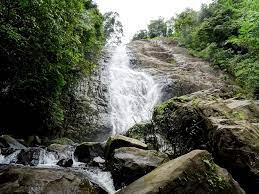

Kozhikode
It is the largest city in the region known as Malabar and was the capital of the British-era Malabar district. In antiquity and the medieval period, Kozhikode was dubbed the City of Spices for its role as the major trading point for Indian spices. It was the capital of an independent kingdom ruled by the Samoothiris (Zamorins). The port at Kozhikode acted as the gateway to medieval South Indian coast for the Chinese, the Arabs, the Portuguese, the Dutch and finally the British. According to data compiled by economics research firm Indicus Analytics in 2009 on residences, earnings and investments, Kozhikode was ranked the second best city in India to live in.
Top Destinations
Kappad Beach
Kappad (Kappakkadavu) Beach is located 16 km to the north of Kozhikode along the Kannur road at Pookkad. Apart from the fact that it is a rocky beach with high potential for tourism, it is the site where Vasco Da Gama landed on 27 May 1498 with three vessels and 170 men. A monument erected here commemorates this event. An ancient temple on a hillock, facing the sea, is an added attraction.
Thusharagiri Fall
Enjoy the breathtaking beauty of Thusharagiri Fall when you pay a visit to Kozhikode. Two streams originating from the Western Ghats meet at this point to create the Chalipuzzha River. The river further trifurcates to create three waterfalls and the free-falling water creates a mist, thus giving the name “Thusharagiri”. This place has a lovely view all around and you get plenty of activities to indulge in. You may go for trekking, or enjoy rock-climbing. You can also take a break to visit the wildlife sanctuaries or sit on the banks of the river to enjoy the waterfalls. The lush green forest and cool water of the streams all around add to your enjoyment. A word of caution though, people with a faint heart should avoid the place because it is nature at its wildest best. This is a place to awaken the nature lover and wildlife enthusiast in you.

Kakkayam Dam
Kakkayam is a stunning dam site in Kozhikode that is famous for its trekking trails and boating options. This lesser-known spot gives one the opportunity to explore some exquisite trails that are sprinkled around the area. Boating rides here give one an exclusive view of the dam area along with a bunch of small waterfalls and dense forests. It is the perfect place to have a quiet secluded picnic with your loved ones